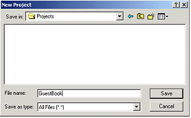

Legacy Document
Important: The information in this document is obsolete and should not be used for new development.
Creating a Simple WebObjects Application
This chapter introduces you to the basic concepts and procedures of developing WebObjects applications. You’ll develop, in stages, a simple application for the World Wide Web. The application you’ll write is called GuestBook.
When you’ve finished the steps in this chapter, your application will have a single web page containing a form that allows users to enter their names, e-mail addresses, and comments. When the form is submitted, the application redraws the page with the user’s information at the bottom.
In “Enhancing Your Application,” you will add features to the application, including a second page, a table that displays information from multiple users, and hyperlinks.
This application illustrates the basic techniques you use to create a WebObjects application. You’ll use two primary tools, Project Builder and WebObjects Builder.
Project Builder is an integrated software-development application. It contains a project browser, a code editor, build and debugging support, and many other features needed to develop an application. In this tutorial, you’ll learn to use Project Builder to:
Create a new WebObjects application project.
Write custom Java code to provide behavior in your application.
Build and launch your application.
WebObjects Builder is an application that provides graphical tools for creating dynamic web pages (components). A web page consists of elements. WebObjects Builder allows you to add most of the common HTML elements to a component by using its graphical editing tools. In addition, WebObjects allows you to create dynamic elements, whose look and behavior are determined at runtime. You’ll learn to use WebObjects Builder to:
Create static content for your pages.
Add dynamic elements to your pages.
Bind the dynamic elements to variables and methods in your code.
In this section:
Creating a WebObjects Application Project
Examining Your Project
Launching WebObjects Builder
Creating the Page’s Content
Binding Elements
Creating the Application’s Output
Building and Running Your Application
Creating a WebObjects Application Project
A WebObjects application project contains all the files needed to build and maintain your application. You use Project Builder to create a new project.
Launch Project Builder.
Launch Project Builder from the WebObjects program group in the Start menu.
Choose Project > New.

In the New Project panel, select Java WebObjects Application from the Project Type pop-up list.
Click Browse.
Navigate to the directory where you want to save the project.
Type the name of the project you want to create (GuestBook).
Click Save.
The New Project panel shows the path you specified.
Click OK.
The WebObjects Application Wizard starts.
For Available Assistance, choose None, and click Next.
If you are developing an application that accesses a database, provides or accesses a web service, or runs as a Java Swing client, you may wish to use one of the levels of assistance that WebObjects provides. For more information on accessing a database, see “Creating a WebObjects Database Application.”
For J2EE Integration, click Next.
For Web Services, click Next.
For EOAdapters, click Select None.
Click Finish.
Project Builder creates a new application directory called
GuestBook. This directory contains the files you work with in both Project Builder and WebObjects Builder.
Examining Your Project
Project Builder displays a browser showing the contents of your project. The first column lists several categories of files that your project may contain. This section describes some of the most important files you’ll use.
Select Web Components.
The next column displays a list with one element,
Main.wo, which is a directory containing the first component in your application. In WebObjects terminology, a component represents a page in your application (or possibly part of a page). The Main component is the starting point of your application.Select
Main.wo.The files you see displayed in the next column are some of the files you work with when developing your component:
Main.htmlis the HTML template for your page. It can include tags for dynamic WebObjects elements as well as regular HTML. Typically, you do not edit this file directly; you create your page’s elements graphically using WebObjects Builder.Main.wodis the declarations file that specifies bindings between the dynamic elements and variables or methods in your scripts. Normally, you don’t edit this file directly; you use WebObjects Builder to generate the bindings for you.
Select Classes in the first column of the browser.
You’ll see these files listed in the second column:
Main.javais a file that allows you to specify behavior associated with the component. You do this by writing code in Java using Project Builder.Application.javaandSession.javaare other Java files that you may want to work with.Application.javadefines application variables that live as long as the application does.Session.javadefines session variables that exist for the lifetime of one user’s session. In “Enhancing Your Application,” you’ll add code toApplication.javaand learn more about application and session variables.DirectAction.javadefines a subclass of WODirectAction that you use as a container class for your action methods. You can rename this class or create multiple subclasses of WODirectAction depending on your application needs.
Launching WebObjects Builder
Now that you’ve created your project, you’ll edit the Main component with WebObjects Builder.
Select Web Components in the first column of the browser.
Double-click
Main.woin the second column.The WebObjects Builder tool launches and displays a window titled
Main.wo. This represents your application’s Main component.You create your component graphically in the upper pane of the component window. The browser at the bottom of the window (known as the object browser) is used to display variables and methods your component uses. Note that there are two variables already defined,
applicationandsession. You’ll create others later.The path view lies between the upper pane and the object browser and shows the element path to the selected element. Any element can be contained in a hierarchy of several levels of elements and can in turn contain other elements. Here, the path view shows the page element, which is the top level of the hierarchy. By clicking the tags in the path view, you can easily choose different elements in the hierarchy.
The toolbar at the top of the window contains several buttons that allow you to create the content of your component. WebObjects Builder also has menu commands corresponding to these buttons.

From the pop-up list at the left of the toolbar, choose .
This pop-up list allows you to switch between graphical editing mode and source editing mode. When you choose source editing mode, the text of your HTML template (
Main.html) appears. It is a skeleton at this point, since the page is empty. As you add elements graphically, their corresponding HTML tags appear in this file.The bottom pane shows your declarations (
Main.wod) file. Later, when you bind variables to your dynamic elements, this file stores the information. Normally, you do not type directly in this file. You can add elements using the toolbar in either source or graphical editing mode.Switch back to graphical editing mode. For the rest of the tutorial, you’ll work in this mode.
Creating the Page’s Content
A web page consists of elements. In addition to the standard static HTML elements found in all web pages, WebObjects allows you to create dynamic elements, whose look and behavior are determined at runtime.
To create elements, you use the toolbar buttons. There are three groups of buttons:

Structures
.Use these buttons to create paragraphs, lists, images, and other static HTML elements.
Dynamic form elements
.Use these buttons to create form elements in which users enter information. WebObjects gives your application access to the data entered by users by allowing you to associate, or bind, these elements to variables in your application.Other WebObjects
.Use these buttons to create other dynamic elements, that you can bind to variables and methods in your program to control how they are displayed. Some of these (such as hyperlinks) have direct HTML equivalents. Others are abstract dynamic elements, such as repetitions and conditionals, that determine how many times an element is displayed or whether it is displayed at all.
Entering Static Text
The simplest way to add text to a page is to type it directly into the component’s window. To demonstrate this, add a title for the GuestBook’s page.
Type My Guest Book and press Shift-Enter (on the keyboard).
The text is displayed at the insertion point, in this case at the beginning of the page.
Select the text you just typed.

Click the button in the toolbar. This converts the selected text to a heading element and displays it in a larger font.
From the pop-up list in the toolbar, choose center justification.
The toolbar also has buttons that allow you to apply text styles such as bold, underline, and italics.
HTML provides several levels of headings. To change the level, you use the Inspector panel. You’ll use this panel frequently throughout these tutorials.
Using the Inspector
You use the Inspector panel to set properties of the elements in your component. The Inspector’s title and contents reflect the element you’ve selected in the component window.

Click .
A panel titled Heading Inspector appears. It allows you to set the level of the heading.

Click “2”.
The text is now part of an <H2> tag, and is displayed in a smaller font.
Click <BODY> in the path view.
Each element has its own Inspector that allows you to set properties appropriate for the element. The Page Inspector allows you to set properties such as the page’s title and its text color.

Type a title (such as “My Guest Book”, or something else of your choosing) in the Title text field and press Enter. This is the title of the window that appears in your web browser when you run the application.
Note:Be sure to press Enter after typing in the title; otherwise, it won’t “stick.”Choose File > Save to save the Main component.
Although WebObjects Builder supports undo, it is always a good idea to save your work frequently.
Creating Form-Based Dynamic HTML Elements
In this section, you’ll create a form with several elements to capture input from a guest. The Submit and Reset buttons you add to the form will apply to all other elements in the form. These elements look and act like HTML form elements but are actually dynamic WebObjects elements, that enable your code to receive and manipulate the data entered by the user. Refer to the screen shot that follows these steps to see how the window should look.
Place the cursor on the second line after the “My Guest Book” text.

Click .
WebObjects Builder adds a form element to your component. The triangle at the upper-left corner indicates that it is a dynamic form, as opposed to a static form. The gray border indicates the extent of the form. You can increase its size by adding elements inside it.
Type the text “Name: ” and press Shift-Enter.
This text replaces the word “Form” that was displayed by default.
Type “E-mail: ” and press Shift-Enter twice.
Type “Comments: ” followed by Shift-Enter.
You have just entered three lines (and a blank line) of static text inside the form. Now you’ll enter some dynamic elements to receive input from the user: two text fields and a multi-line text area.
Place the cursor to the right of the text “Name: ”.

Click to create a dynamic text field element (WOTextField).
Repeat steps 6 and 7 for “E-mail: ”.
Use the button to create a multi-line text area below the “Comments: ” line.
Press Shift-Enter twice to create two blank lines.

Click to create a Submit button, used to send the data in the form to the server.

Click to create a Reset button, used to clear the data in the form.
The window should now look like this:

Resizing the Form Elements
The text fields and text area are a bit small, so you’ll resize them using the Inspector panel.
To inspect an element, you must first select it. Some elements (such as text fields and text areas) can be selected simply by clicking them; they appear shaded.
You select text elements as you would in most text-editing applications (by dragging, or by double-clicking words, or by triple-clicking lines); they appear highlighted when selected.
Select the Name text field.
In the Textfield Inspector, change the setting of the pop-up list at the upper left of the panel from Dynamic Inspector to Static Inspector.

All WebObjects elements have a dynamic inspector, that is, one that allows you to set bindings (you’ll work with bindings in the next section). In addition, many WebObjects elements (those with direct counterparts in static HTML) also have a static inspector. This inspector allows you to set the standard HTML attributes for that type of element.
In this panel, you can set various attributes of the static counterpart of a WOTextField, which is an HTML <INPUT TYPE=TEXT> element.
In the Visible length field, enter 20 to set the width of the text field to 20 characters.
Repeat steps 1 and 3 for the E-mail field.
Select the multi-line text area.
In the Text Area Inspector, you can set various attributes corresponding to those of a <TEXTAREA> element.
Increase the size of the element by specifying the number of columns and number of rows to, say, 30 and 6.
Save the Main component.
Don’t worry if you see a validation error message. That issue will be addressed in “Binding Elements.”
Binding Elements
When a user enters information in form elements, your application needs a way of accessing that information. This is done by binding the form elements to variables in your application. When the user submits the form, WebObjects puts the data into the variables you’ve specified.
Your application typically processes the data and returns a new page (or the same page) displaying information that makes sense based on the user’s input. The information displayed is usually represented by other dynamic elements that are bound to variables and methods in your code.
This process of receiving a request (triggered by actions such as submitting a form or clicking a hyperlink) and responding by returning a page is known as the request-response loop. This loop is at the heart of WebObjects programming.
In this tutorial, you’ll have WebObjects return the same page, with the information you received from the user displayed in a slightly different format at the bottom.
Creating Variables
In this section, you’ll declare individual variables in your code file (Main.java) to hold the name, e-mail address, and comments entered by a single guest. Later on, you’ll structure this information differently in order to work with data from multiple users.
WebObjects Builder allows you to declare variables without having to edit your source file directly. At the bottom of the panel there is a pull-down menu titled Edit Source. It has five items:
Add Keyallows you to add a key to your source file. A key can be either an instance variable or a method that returns a value.Add Actionallows you to add the template for an action method, which is a method that takes no parameters and returns a component (the next page to be displayed).Delete Keyallows you to delete a key from your source file by deleting the instance variable or the method that returns a value.Rename Keyallows you to rename a key in your source file by renaming the instance variable or the method that returns a value.View Source Fileopens the source file in a Project Builder window.
Choose Add Key from the pull-down menu.
The Add Keypanel opens.
Type guestName in the Name field.
To specify the variable’s type, select String from the combo box (or you can type String directly in the box).
Click Add.
You have just created a variable called
guestNameof type String. It appears in the first column of the object browser. A declaration forguestNamealso appears inMain.java, which you’ll edit later.Create the variables
emailandcommentsin the same way (they are also of type String).
Binding the Input Elements
Each dynamic element contains several attributes. These attributes determine what happens when the element is displayed or when a form element is submitted. When you bind an element, you actually bind one or more of its attributes.
For example, a WOText element (which represents a multi-line text area) is defined as having two attributes:
valuespecifies the string the user enters in the text area.namespecifies a unique identifier for the text area.
In this tutorial, the only attribute you are concerned with is value, which represents the string entered by the user in the comments field. You’ll bind this to the comments variable. You don’t need to bind the name attribute in this application. In a later example, you’ll bind more than one attribute of an element.
In the object browser, make a connection by pressing on the
commentsvariable and holding down the mouse button while dragging to the Comments text area. Then release the mouse button.A menu appears, displaying the attributes for the text area.
Choose value.
In the Dynamic Inspector,
commentsappears in the Binding column next to thevalueattribute of the text area, indicating that the binding has been made. Also, the text “comments” appears in the text field to show that it has been bound.Next, you will bind the
guestNamevariable using another technique. Select the Name WOTextField element. In the Inspector, select the Dynamic Inspector.The Inspector displays the
valueattribute in red, indicating that this attribute must be bound; otherwise, WebObjects displays an error message when you try to run your application.In the Inspector, double-click in the Binding column next to
value. Type g and press Enter. The Inspector fills in the rest of the “guestName” key for you.Bind the
emailvariable to the corresponding text field using one of the methods above.Save the Main component.
Implementing an Action Method
When the user clicks the Submit button, your application will respond by redisplaying the page with the submitted information shown at the bottom. To make this happen, you implement an action method and bind that method to the action attribute of the WOSubmitButton.
From the Edit Source menu at the bottom of the object browser, choose Add Action.

Enter “submit” as the name of your action method.
From the “Page returned” combo box, select
null.The value returned by an action method represents the next page (component) to be displayed. When you return
null, the current page is redrawn. In a later task, you’ll see how to return a new component.Click Add.
The
submitaction appears below a horizontal line in the first column of the object browser.Make a connection from the
submitaction in the object browser to the Submit button (press the mouse button down on the action, drag to the button, and release the mouse button).A menu appears with the Submit button’s attributes.
Choose action.
You just bound the
submitmethod you created to theactionattribute of the WOSubmitButton. You don’t need to write any additional code, so your application is now ready to run. However, you may want to look at your source file.From the pull-down list at the bottom of the window, choose View Source File.
Project Builder becomes active and displays the code for your component (in
Main.java). You’ll notice that this file contains declarations for the variables you created earlier, as well as a declaration for thesubmitaction method.// Generated by the WebObjects Wizard ...
import com.webobjects.foundation.*;
import com.webobjects.appserver.*;
import com.webobjects.eocontrol.*;
import com.webobjects.eoaccess.*;
public class Main extends WOComponent {protected String guestName;
protected String email;
protected String comments;
public Main(WOContext context) {super(context);
}
public WOComponent submit() {return null;
}
}
Creating the Application’s Output
So far, you have a way for the guest to enter information and a way for the application to store that information. Now, the application needs to do something with the information.
For now, you’ll have the application simply display the same information the user entered, in a slightly different format. This allows you to verify that you have correctly received the data. To do this, you’ll add dynamic string elements (WOStrings) to the main page and bind them. In the next chapter, you’ll use more complex forms of output.
In WebObjects Builder, place the cursor at the end of the document, making sure that it is outside the gray rectangle that represents the form, and press Shift-Enter.
Click to create a horizontal rule (an <HR> element).
Press Shift-Enter to add a blank line.

Add a WOString element by clicking .
A WOString is a dynamic element whose value is determined at runtime. It is shown as a small rectangle surrounded by two icons.

In the object browser, make a connection from the
guestNamevariable to the center rectangle of the WOString.Notice that the name
guestNameappears inside the WOString, and the attribute pop-up menu doesn’t appear. The message “Connected guestName to value” appears in the upper-right corner of the panel.WebObjects provides this shortcut for binding to the
valueattribute of WOStrings because it is the attribute you most often want to bind. Thevalueattribute signifies the string that will be displayed when the page is drawn. If you want to bind a different attribute, you make a connection to the left or right icon, and the attribute pop-up menu appears as usual.Click to the right of the WOString and press Shift-Enter.
Create two more WOStrings and bind them to
emailandcomments, respectively.Note that it isn’t necessary to resize the WOStrings as you did with the text fields. They expand at runtime to display the value of the variables to which they are bound.
Save your component. It should now look like this:

In summary, when the user clicks the Submit button, a new request-response cycle begins. WebObjects stores the data entered in the dynamic form elements in the variables they are bound to (guestName contains the value in the Name field, email contains the value in the E-mail field, and comments contains the value in the Comments field). It then triggers the action method bound to the action attribute of the WOSubmitButton. The action method returns a page (in this example, the same page). When the page is redrawn, the dynamic strings at the bottom show the values entered by the user.
Now you are ready to test your application.
Building and Running Your Application
Make Project Builder active. A quick way to do this from WebObjects Builder is to choose View Source File from the pull-down list at the bottom of the window.
To build and launch your application, you use buttons in Project Builder’s toolbar.

Click in the toolbar to open the Project Build panel.
Click in the Project Build panel.
The Project Build panel displays the commands that are being executed to build your project. If all goes well, it displays the status message “Build succeeded.”
Close the panel.

Click in the toolbar to open the Launch panel.
Click in the Launch panel to launch your application.
The Launch panel displays a series of messages. If all goes well, you should see messages similar to the ones shown in the picture below, which mean that your application is running successfully.

Your web browser (such as Netscape Navigator or Internet Explorer) should launch automatically and load the correct URL for your application.
Test your application by entering information and submitting the form.
If all goes well, your page should look like the one shown at the beginning of this chapter.
© 2004 Apple Computer, Inc. All Rights Reserved. (Last updated: 2004-02-01)